Hat Modding
Pre-requisites:
- have completed the Making a DLL Project section.
- The latest version of Blender
- Basic 3D theory/knowledge
- Basic C++ programming skills
- SA Tools
- Chao World Extended (Versions >8.3)
- patience
Preparations to make:
Hat mods provide the basic groundwork to give your Chao a custom hat without modifying already existing hats. We will create a model, assign the model to the Chao Black Market, and give the hat personality by giving it a price, and descriptions that show up on the Black Market menu page.
If you haven't downloaded SA Tools, do so now and create a project for the purpose of this mod. We won't use the project for building the mod, but we will use the project to rip the assets we need to get the Chao model for fitting the hat on the head.
Once you're done, open up Blender, delete the default cube and select file -> Import -> Sonic Adv. Model (.*mdl), and find the Project\Data_DLL\AL_RootObject in your Sonic Adventure 2 Projects folder. Select 0.sa2mdl and click import.
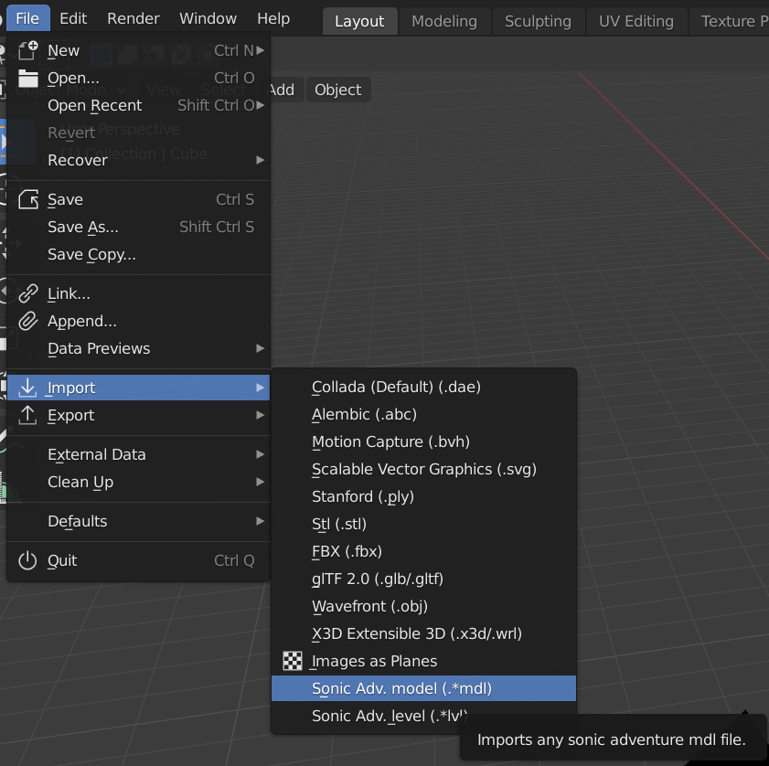Modelling and Texturing:
Modelling
Hide the imported model, and create your hat as you would like. For example, I'll make a top hat. Take care to make sure that the normals are facing outside of the hat, and follow standard 3D modelling practices while making the hat. The model will be auto-triangulated on export, so don't worry too much about what polygons your hat should be made out of. There is a maximum vertex limit of 32768, but try to work in the visual style of the game, otherwise the hat will look weird on a Chao.
Delete the point light and the camera, otherwise your game may crash!
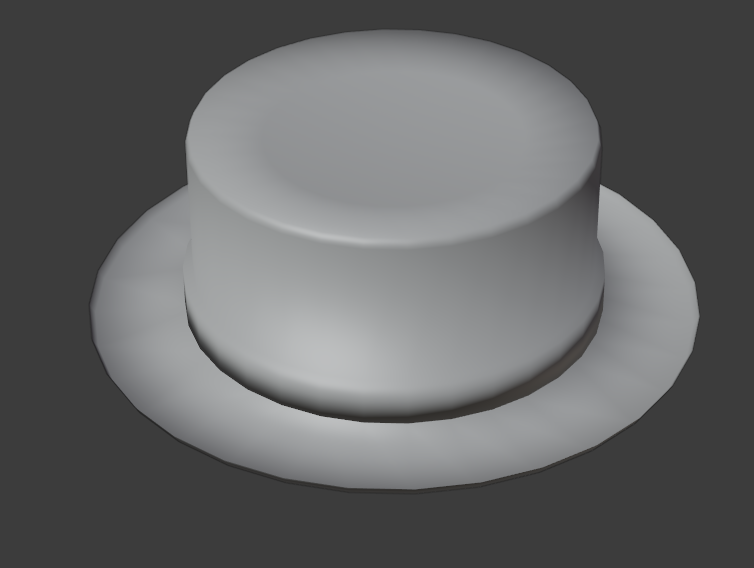Select the object constraints button on the toolbar, and click "add object constraint". We want to parent the hat to the Chao's head, with the Chao hidden.
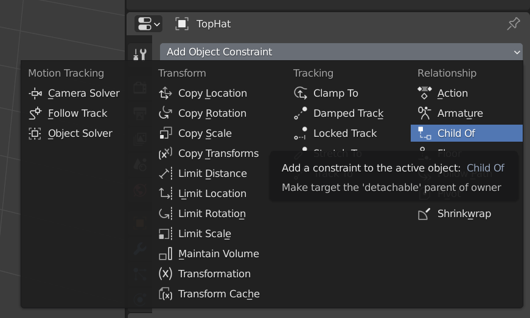In the "Target" type in '016' and look for "016_object_00015274" - This is the Chao's head. Once done, unhide the Chao import.
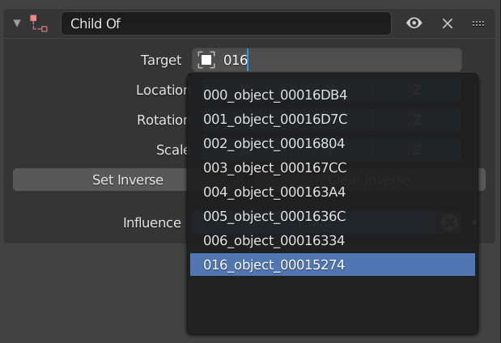Clear Inverse on the hat, before fitting the hat onto the Chao.
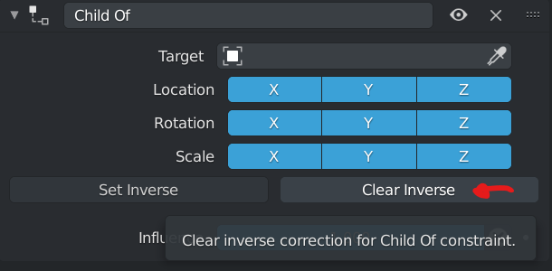Fit the hat onto the Chao, making sure that there aren't any parts of the Chao's head showing while the hat is on. Note that because hats are not "One size fits all" you may want to have a look at how it looks on other Chao once the mod is done to make sure it fits the best on the Chao you want to give the hat to.

Delete the Chao "import_0" hierarchy in the scene collection view. It will be important to not mess with the object constraint going forward, as the hat is now set in the position above the Chao's head, relative to where it should be in game. We're now done with the modelling section of the mod, but we still have to texture the hat.
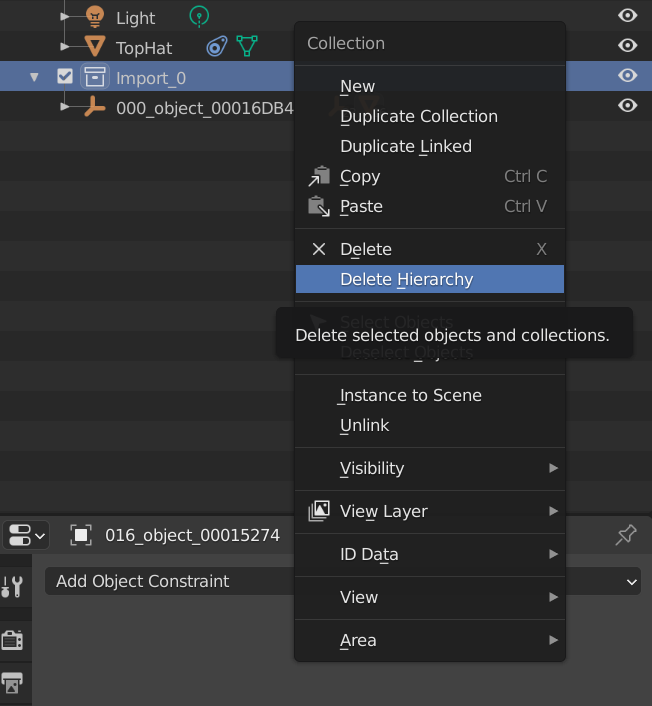Texturing
Select the hat, go to the tools menu in the properties panel, and go to SA Tools->Update Materials. This creates an SA2Shader node group that will allow us to texture preview the model inside Blender itself. Make sure to select the material you used for the model (or create one if you haven't) in material properties to see the hat turn magenta. This is normal because we have not textured the hat yet.

Go to the Texture Paint tab, and click the "new" button on top. This will make a new texture for the model. Make the size at most 128x128 (recommended - going higher would allow for higher quality, but at the cost of performance and size of mod) and then assign the texture to the model.
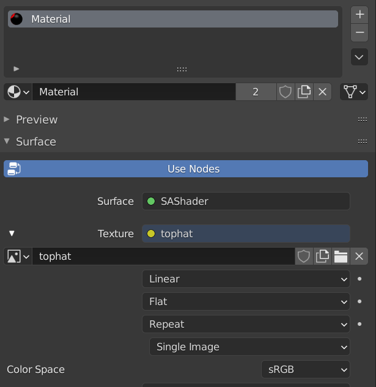In the texture assignment, go to the SA Tools settings and set your texture ID - texture ID should be 0 for your first hat, and additional hats or textures must increment the texture ID by 1 so that the model can be appropriately mapped

Go to the UV editing tab, select all of your hat's vertices (A), and UV map it (either by pressing U, selecting Smart UV Project or by clicking UV, Smart UV Project)
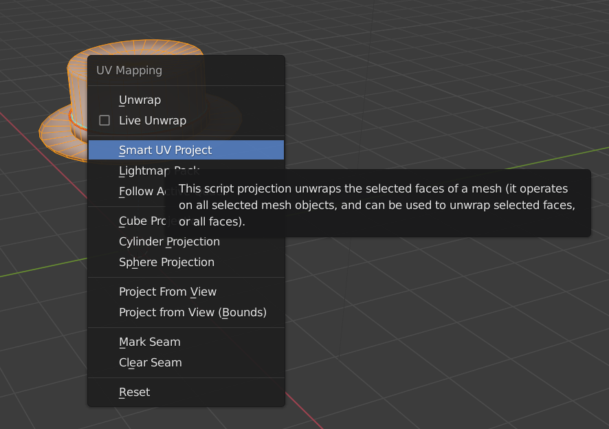Adjust the UVs as you would like. Once done, go to the UV editor pane on the left, and go to UV->Export UV Layout. This will allow you to export your UVs so that you can use an external application (like Photoshop) to UV paint your model. Below, you will see my re-arranged UVs for the top hat I created.
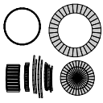Paint the hat as you like, and save the hat (as well as the texture). Once done, we can continue into the code section of the mod! Export your model as an SA2MDL file and then close Blender.
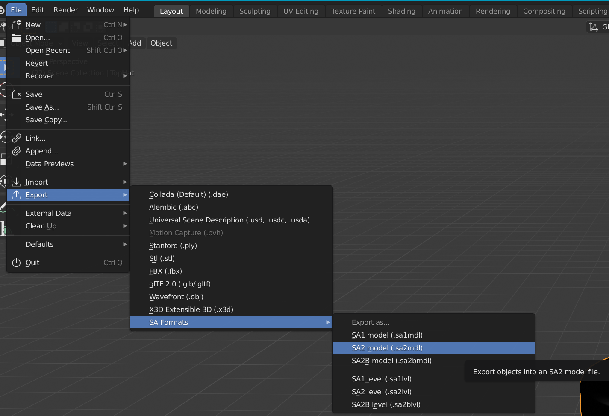Basic code
Open your VS project folder and download and extract the archive for the API code here into the project folder. This will include the base code, as well as any additional dependencies outside of the SA2 Programming code required to make the project complete. Add the Main.cpp file to your project and open it. Look at the following code:
{
//ChaoTexlistLoad - "Filename" - Do NOT conflict with other hat or fruit mods. - make sure your UIDs are unique!
RegisterChaoTexlistLoad("ExampleHats", &texlist_HATS);
//EasyRegisterHat - "Filename", Price, Sale, "Name", "Description", - Place hat models in the root folder of the mod folder.
EasyRegisterHat("filename.sa2mdl", 100, 100, "Name", "Description");
//EasyRegisterAccessory - "Filename", buy, sell, "Name", "Description", EAccessoryType (see enum above) - Adding a documentation example
EasyRegisterAccessory("filename.sa2mdl",100,100,"Name","Description",Head);
}
RegisterChaoTexlistLoad defines the name of your texture file (in this case it's ExampleHats.pak, change it so that it doesn't mess with any other hat mods.)
You will now need to make a choice on what your hat will be: Will it be considered as a vanilla hat (which removes the head of the Chao) or will it be considered an "Accessory" by CWE (which doesn't remove the head of the Chao)
The EasyRegisterHat function gives you access to register your hat we made in the previous section. You can add as many hats as you like using this line of code, limited to 255 hats. Note that other hat mods share this limit, and if you do reach the limit, the game will crash when trying to load one of the hats in the Black Market.
The syntax for the EasyRegisterHat function is as follows: EasyRegisterHat("filename",buy price, sell price, "Name of hat", "Description for Black Market");
The EasyRegisterAccessory function gives you access to register your accessory in the previous section. Note that the same applies with the hats, as there is a limit of 255 hats and accessories.
The syntax for the EasyRegisterAccessory function is as follows: EasyRegisterAccessory("Filename",buy price, sell price, "Name of accessory", "Description for Black Market", EAccessoryType);
What is EAccessoryType?
EAccessoryType allows us to create customized models based off of rigs. There is now an advanced section for people who want to create such models. Click the "Accessories modding" button to go there! For now, you can either use Head or Face for the accessory you want to make.
Drag and drop the ModelInfo.h and ModelInfo.cpp files into the "Source Files" folder in your Solution explorer. (These dependencies generally throw linker errors if not added this way for me, so let me know if this is an issue for you)

Click the build configuration dropdown and select "Release" and select from the solution platform "x86", then build your project by pressing F6 or going to "Build -> Build Project. If all goes well, the build should be completed and a "Release" folder should appear in your project folder with the project name DLL inside.
For example purposes, this is what the code should look like (if you added one hat like I did)
Making the texture file
Close VS, and open SA Tools TextureEditor. Click the "add" button and add your hat texture.

Select your hat texture you added, and set the Global Index to something unique. Anywhere around 150000 will be fine.

Save your hat texture that you added as .PAK, as what you set your RegisterChaoTexlistLoad filename as. Save it somewhere accessible so that you can place it in your mod soon.

We are now done with the mod creation process. Let's package up the mod and get it ready for shipping.
Finalizing and Testing
We're finally at the endgoal of this project. This is usually where issues will get picked up, so we will test the mod as we go along finalizing the mod.
Add your SA2MDL model into the root of your mod project folder (this is where your mod.ini file is. This can change if you changed the finalPath variable in the RegisterFruit function.
Add your DLL file from the "Release" folder to your mod project folder.
Inside your mod project folder, create a gd_PC folder, and inside the gd_PC folder, add a PRS folder. Copy your .PAK texture file from the last section to the PRS folder.
Open the mod.ini file and add the filename of your DLL file to the DLLFile= property we made in the DLL Project setup. Save and close the file.
Now, in your SA2 Modloader, find your mod and check it. Make sure your mod is beneath Chao World Extended to work - Chao World Extended is a required prerequisite to this process, so it must be at the top of your list.

Click save, and close the modloader, then run Sonic Adventure 2. Cycle your Black Market until you find the hat.
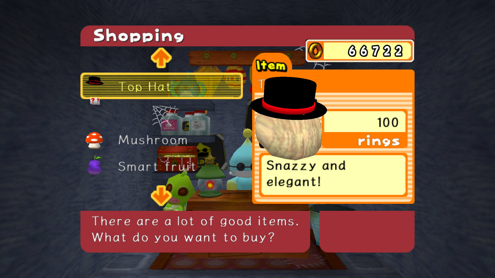In the screenshot above, you will see a hat that is missing from the list - This was due to me turning off the hats that I didn't use for testing purposes and is a failsafe for if a hat cannot be found or if the index is missing from your hat mods.
Buy the hat that you made, and test your hat. If everything was successful, then you should have a Chao wearing your custom hat.

Make any adjustments that you want to make to your hat by repeating the steps you don't feel happy with, wrinse, wash and repeat. You now know how to make a Chao Hat!
Troubleshooting
This section involves a few troubleshooting steps for where issues may arise. A few errors may occur when making a custom hat, and you may get stuck for a while.
My game crashes when I'm in the Black Market!
This is caused by four issues:
- Array size - Check that your
NJS_Texnamein the code has enough space to hold the amount of textures you have in your mod. Having the array size be smaller than the amount of textures in your mod causes the game to crash. - Model issues - This is mainly caused by extra empties found in the SA2MDL model. This happens when your camera or point lamp has not been removed, causing your model to crash the game. Remove the camera and point empties, export your SA2MDL and try again.
- Texture issues - If your texture file is not in the right location (gd_PC/PRS) then the game cannot find the file that it is looking for, throwing a "file not found" exception and crashing. Place your texture file in the right place, and try again
- Forgetting to delete the Chao Model after you are done with making the hat. Delete the Chao model hierarchy, save, and try again.
My hat isn't where I placed it!
Make sure to "Clear Inverse" on the object constraint, move the hat back onto the Chao, and try again.
My texture doesn't look right!
Make sure your texture is correctly assigned to the model in Blender, and make sure that in TextureEditor your texture has a unique value in the Global Index field.
My hat doesn't sit on my Chao's head right!
Reimport the Chao model, add an object constraint to the Chao's head, adjust to the needs of the Chao, delete the Chao (do not delete the object constraint), export and try again.
My hat crashes with other hat mods!
You've somehow reached the shared Black Market limit of 255 items of the hat type. Remove some mods and try again.
My Hats changed when I changed my mod order. Why?
This is because hats, and fruit mods have order priority over each other. IDs are sorted from the top of the modloader list to the bottom, so changing mod loader order changes what hats Chao may have, as well as the order they appear in when loading Black Market. This can also be useful for testing if your hat is loaded correctly.